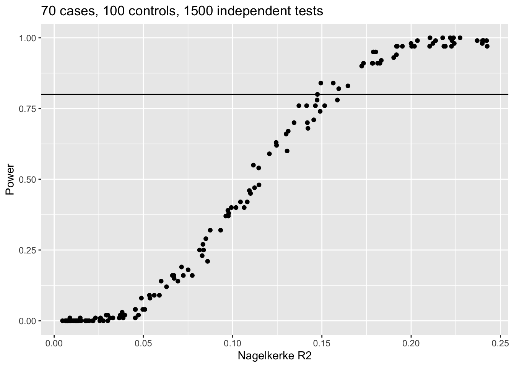

library(fmsb)
library(dplyr)
Attaching package: 'dplyr'The following objects are masked from 'package:stats':
filter, lagThe following objects are masked from 'package:base':
intersect, setdiff, setequal, unionlibrary(ggplot2)Gibran Hemani and Nic Timpson
January 26, 2023
Sample of individuals who have had heart surgery, followed up and some number go on to have kidney disease. What is the predictive rsq of a metabolite on kidney disease outcome, that has 80% power to be detected after multiple testing correction?
Call libraries
Attaching package: 'dplyr'The following objects are masked from 'package:stats':
filter, lagThe following objects are masked from 'package:base':
intersect, setdiff, setequal, unionDefine model
sim <- function(ncase, ncontrol, b)
{
met <- rnorm(ncase+ncontrol)
y <- rbinom(ncase+ncontrol, 1, plogis(log(ncase/(ncase+ncontrol)) + met*b + rnorm(ncase+ncontrol)))
table(y)
mod <- glm(y ~ met)
rsq <- NagelkerkeR2(mod)$R2
pval <- summary(mod)$coef[2,4]
return(tibble(rsq, pval, ncase, ncontrol, b))
}Set parameters
Run
Visualise
res %>% group_by(b) %>%
summarise(rsq=mean(rsq), psig = sum(pval < (0.05/ntest))/n()) %>%
ggplot(., aes(x=rsq, y=psig)) +
geom_point() +
geom_hline(yintercept=0.8) +
labs(x="Nagelkerke R2", y="Power", title=paste0(ncase, " cases, ", ncontrol, " controls, ", ntest, " independent tests"))
R version 4.2.1 Patched (2022-09-06 r82817)
Platform: aarch64-apple-darwin20 (64-bit)
Running under: macOS Monterey 12.6.2
Matrix products: default
BLAS: /Library/Frameworks/R.framework/Versions/4.2-arm64/Resources/lib/libRblas.0.dylib
LAPACK: /Library/Frameworks/R.framework/Versions/4.2-arm64/Resources/lib/libRlapack.dylib
locale:
[1] en_GB.UTF-8/en_GB.UTF-8/en_GB.UTF-8/C/en_GB.UTF-8/en_GB.UTF-8
attached base packages:
[1] stats graphics grDevices utils datasets methods base
other attached packages:
[1] ggplot2_3.4.0 dplyr_1.0.10 fmsb_0.7.5
loaded via a namespace (and not attached):
[1] knitr_1.41 magrittr_2.0.3 munsell_0.5.0 tidyselect_1.2.0
[5] colorspace_2.0-3 R6_2.5.1 rlang_1.0.6 fastmap_1.1.0
[9] fansi_1.0.3 stringr_1.5.0 tools_4.2.1 grid_4.2.1
[13] gtable_0.3.1 xfun_0.36 utf8_1.2.2 DBI_1.1.3
[17] cli_3.5.0 withr_2.5.0 htmltools_0.5.4 assertthat_0.2.1
[21] yaml_2.3.6 digest_0.6.31 tibble_3.1.8 lifecycle_1.0.3
[25] farver_2.1.1 htmlwidgets_1.5.4 vctrs_0.5.1 glue_1.6.2
[29] evaluate_0.19 rmarkdown_2.16 labeling_0.4.2 stringi_1.7.8
[33] compiler_4.2.1 pillar_1.8.1 scales_1.2.1 generics_0.1.3
[37] jsonlite_1.8.4 pkgconfig_2.0.3